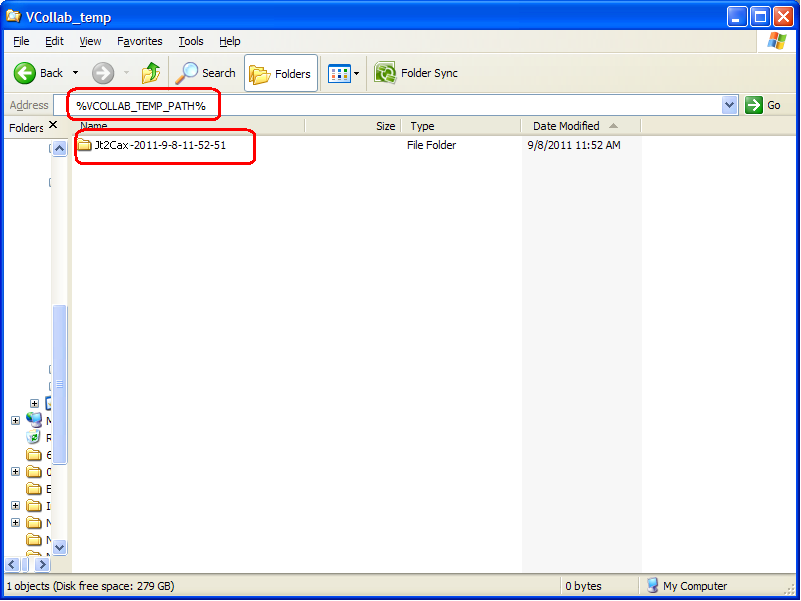
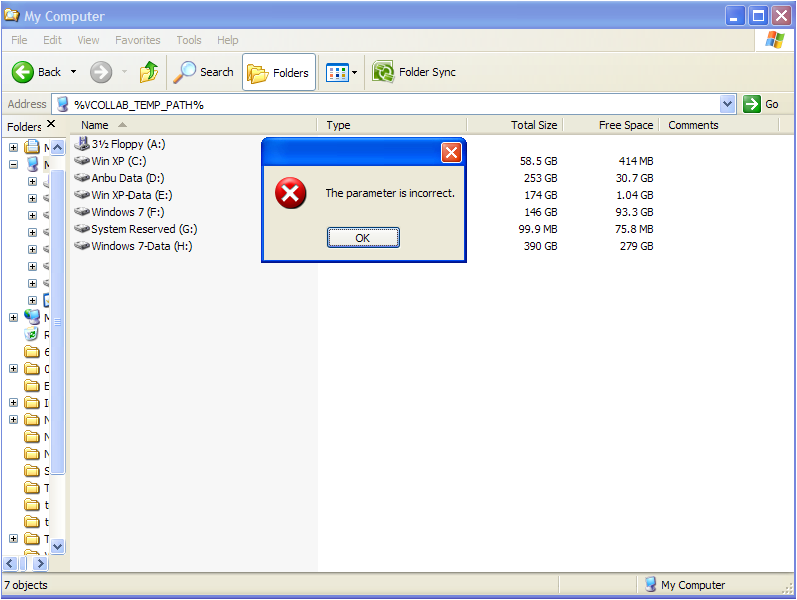
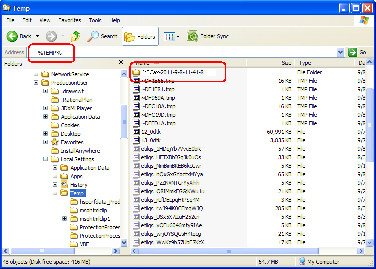

Log Files¶
VMoveJT generates log file during each translation. User can find the following log file after each VMoveJT run.
VMoveJT_Log.txt
The above file is written in a folder of the following format
VMoveJT-YYYY-MM-DD-HH-MM-SS
That is, VMoveJT creates a folder in the above format for each instance of Jt2Cax application and writes the log file into the folder.
The folder with log files is generally written into a folder represented by VCOLLAB_TEMP_PATH environment variable. User can go to this folder by just entering %VCOLLAB_TEMP_PATH% in the windows explorer address bar as shown in the following figure.

If the VCOLLAB_TEMP_PATH environment variable is not defined, user will get an error message similar to the one shown in the following figure.

In case of non-existence of VCOLLAB_TEMP_PATH, the log file folder is written into a folder represented by the Windows environment variable TEMP. User can go to this folder by entering %TEMP% in the Windows explorer address bar as shown in the following figure.

In case of errors during the VMoveJT usage, the users are requested to communicate the errors along with these log files generated by VMoveJT to VCollab support (support@vcollab.com). The log files are designed to help the VCollab development and support teams understand the issues better and faster and provide fixes or workarounds to the user.